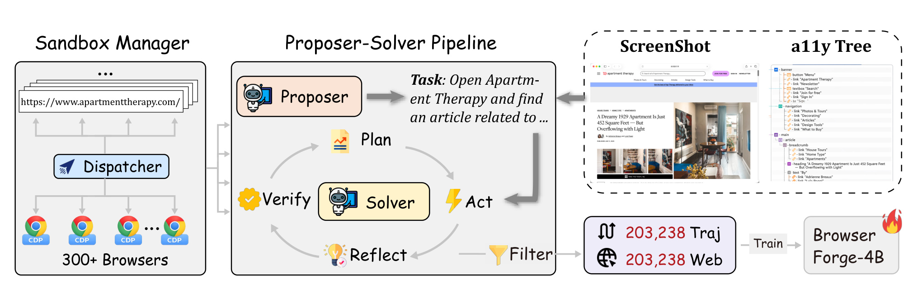
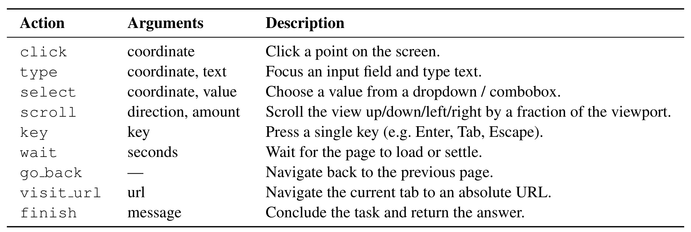
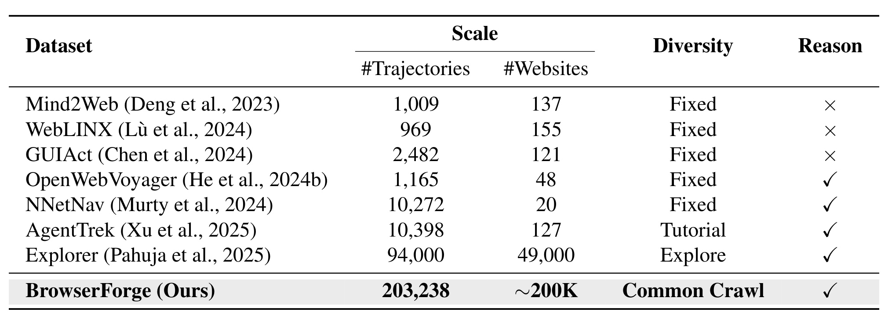
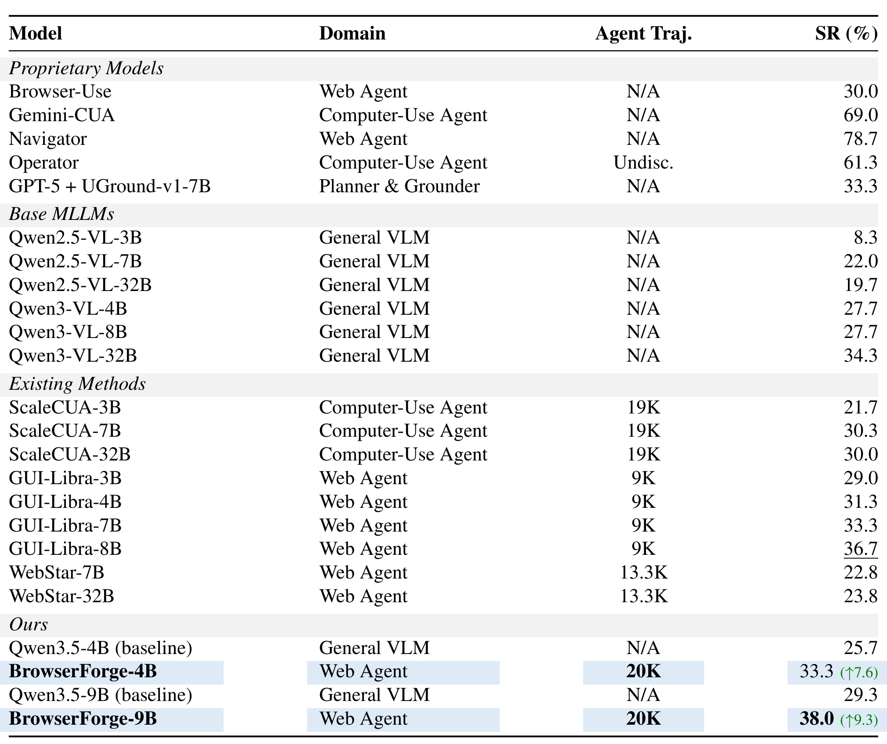
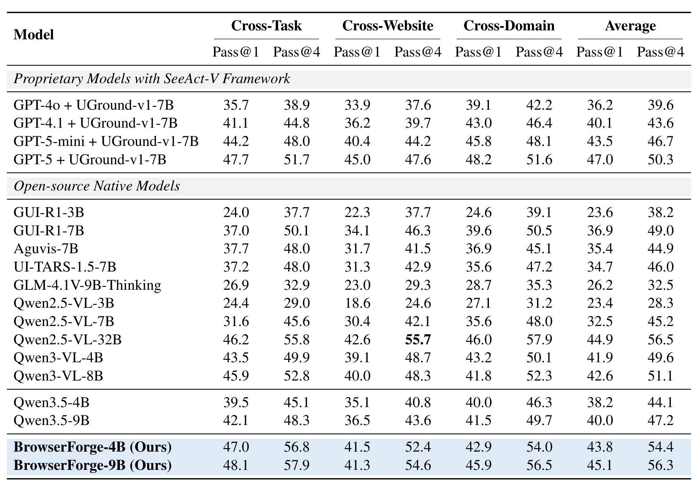
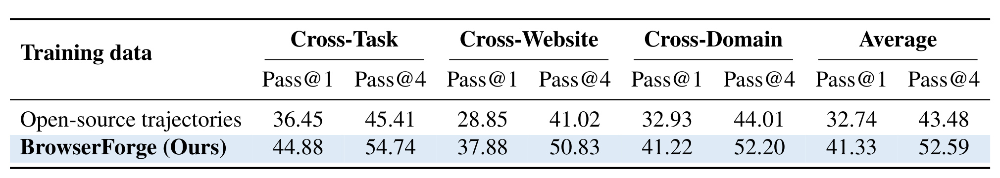
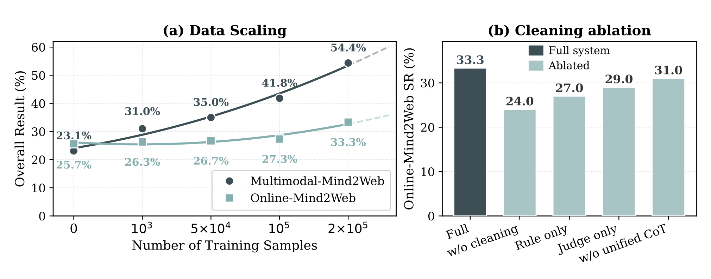
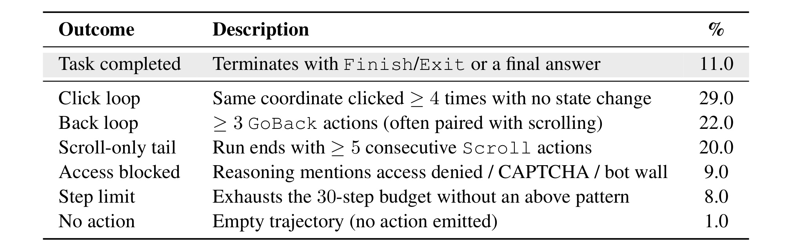

BrowserForge：用并行浏览器沙箱扩展网页交互轨迹
BrowserForge 是浙江大学与腾讯 LLM Department 合作完成的一项网页智能体数据工程工作，作者包括 Fei Tang、Huawen Shen、Zhiqiong Lu、Zhengxi Lu、Pengyuan Lyu、Chengquan Zhang、Weiming Lu、Jun Xiao、Yueting Zhuang 与 Yongliang Shen；第一作者主机构为浙江大学。论文于 2026 年 8 月 25 日提交至 arXiv:2608.24848。截至本次核验，没有发现独立、可访问的 BrowserForge 官方项目或代码仓库；参考文献中的 browser-use 链接是 Solver 所依赖的上游浏览器控制项目，并不是 BrowserForge 的实现与数据发布页。
只看截图的网页智能体不再依赖易变且高 token 成本的页面结构，但训练它们仍缺少覆盖开放网页的大规模、高质量交互轨迹。现有自动合成可以增加轨迹条数，却往往没有扩大网站分布，因此模型仍反复见到少量固定界面与交互模式。
1. 背景和问题
1.1 纯 GUI 网页智能体的数据瓶颈
网页智能体有两条典型感知路线。第一条把 HTML 或 accessibility tree（a11y 树）序列化成文本，让模型根据元素 ID 点击或填写；第二条直接读取浏览器渲染后的截图，再把动作落到屏幕坐标。前者的优势是元素结构显式，但论文强调两类代价：网页一旦改版，DOM 层级与 a11y 标签就可能变化，绑定这些结构的策略很容易失效；同时，一页 a11y 树可能膨胀到数万 token，长轨迹每一步都重复支付上下文成本。纯 GUI 路线把页面压缩成固定分辨率的视觉观测，输入形态跨站点更统一，也更接近人实际操作界面的方式。
代价随之转移到训练数据。点击、输入、滚动与导航不是静态图文理解，而是多步决策；一个动作会改变下一张截图，早期失误还会把智能体带入完全不同的页面状态。因此可用监督不仅要有任务描述，还要有逐步观测、推理、动作和结束判定。Mind2Web 等公开数据只有几千级任务或轨迹，网站覆盖通常在几十到一百多个。近年的自动合成方法虽然把轨迹总数推高到万级甚至九万级，但来源仍可能是一批教程、人工种子站点或固定环境。对开放网页泛化而言，轨迹条数与网站覆盖是两个不同的尺度：同一个网站上采十万条任务，仍可能只学到少数视觉布局与交互范式。
BrowserForge 的问题定义因而不是“怎样再做一个更强的网页模型”，而是“怎样把开放网页本身变成可扩展的数据源”。作者希望轨迹数量和网站分布同时扩张：从 Common Crawl 风格的公开网页快照取 URL，用大量隔离浏览器把每个页面变成可交互环境，再由一个智能体提出任务、另一个智能体执行，最后过滤失败轨迹。论文把模型骨干尽量固定，将变量集中到数据来源和清洗链路上，这使它比只报告更大模型分数的工作更容易回答一个工程问题：如果模型和训练预算不变，更广的网站覆盖是否真的能改善网页操作能力？
1.2 distinct websites 不等于 distinct interaction patterns
作者报告 203,238 条原始轨迹，且每条来自一个不同网站。这个口径很强，因为它避免在少量站点内反复生成任务；但“distinct website”不能自动推出“distinct interaction pattern”。不同 URL 可能使用同一种建站模板，同一主域名下的不同页面也可能被计为不同网站；反过来，一个大型站点内部又可能包含多个完全不同的业务流。论文表格将轨迹数与网站数并列，却没有在正文给出 URL、host、registrable domain 或模板聚类层面的去重定义。因此，203,238/约 200K 更适合读作覆盖计数，而不是已经证明有同样数量的独立任务分布。
还有一个关键边界：BrowserForge 最终训练和发布的策略声称只从截图行动，但合成阶段仍把 a11y 树作为信号交给 Proposer，并让 Solver看到截图与结构化交互元素。这是一种合理的“教师拥有更多信息、学生只看像素”的数据生成方式，却意味着合成任务的可执行性与轨迹质量部分依赖网页结构。若 a11y 信息缺失、错误或带有屏幕上不可见的内容，Proposer/Solver 的行为可能比最终纯 GUI 学生拥有更多特权。论文的贡献不是证明 a11y 永远不需要，而是把它限制在一次性的合成环节，使部署时不再承担长结构输入。
最后，开放网页不是无风险的免费环境。Common Crawl 中可访问的页面不等于允许被自动交互、保存截图、重写推理并用于模型训练。登录、注册与支付任务被 Proposer 提示词明确排除，URL 清洗也会去掉已知敏感主机和评测站点，但论文没有完整说明 robots/服务条款、内容许可证、个人信息识别、版权移除请求、cookie 隔离或会产生外部副作用的表单如何处理。规模化浏览器系统把数据瓶颈转化成了数据治理问题，这一转化本身就是理解 BrowserForge 时不能跳过的部分。
2. 方法
BrowserForge 按论文原文第 3 节的顺序由四个模块组成：开放网页 URL 获取与清洗、并行浏览器沙箱调度、Proposer-Solver 任务合成、轨迹过滤与推理格式统一。输入是一批未经清洗的公开网页 URL，输出不是“网页列表”，而是可以直接做监督微调的截图—推理—动作序列。本文没有可复用的核心公式：方法章节没有编号公式、损失函数或复杂度推导；归一化坐标范围、并行数、训练轮数和样本量都是协议常量或系统统计。理解重点应放在四个阶段的输入输出、权限边界和误差如何向下游传播。
2.1 Open-web URL sourcing and cleaning
第一阶段从 Common Crawl 风格的公共网页快照中抽取候选 URL，而不是从一张固定站点名单向内扩写任务。原始 URL 会先经过四道筛选。其一是可达性与类型过滤：不能解析、不能加载、只指向媒体或文件下载等缺乏交互面的地址被丢弃。其二是内容过滤：正文过短、近乎空白或缺少可构造非平凡任务的多模态元素的页面不进入沙箱。其三是黑名单：与评测基准重叠或属于已知敏感主机的地址被排除，用来降低污染和明显安全风险。其四是集群 IP 级复验：从数据中心或公司网络看不到的页面，即使在一般网络上可访问，也会在投入浏览器时间前被剔除。
存活页面会被渲染成四元信息：当前截图、URL、页面标题和 a11y 树。作者还改变沙箱的屏幕分辨率、user agent 与界面语言，以增加图像尺寸和 locale 的变化。这里的设计价值在于把“开放网页覆盖”落成一条可执行的前置数据管道，而不是把抓取失败留给昂贵的多模态模型处理。不过，过滤器的具体阈值、站点类型分类器、黑名单来源、Common Crawl 快照版本和 URL 去重规则没有披露；复现者能理解阶段结构，却很难仅凭论文复原完全一致的候选分布。

Figure 1 从左到右给出完整的信息流。左侧 Sandbox Manager 同时维护待处理 URL、Dispatcher 与 300+ Browsers；中间不是单个模型直接“边想边采”，而是先由 Proposer 根据页面提出任务，再让 Solver 在 Plan、Act、Reflect、Verify 闭环里完成它。右上角明确显示截图与 a11y 树都是合成时页面状态的一部分；右下角则把 203,238 Traj 与 203,238 Web 并列，之后才经过 Filter 进入 BrowserForge-4B 的训练。这张图所表达的核心机制是：规模来自调度，分布来自开放 URL，任务语义来自 Proposer，轨迹正确性来自执行与过滤，四者缺一都不能把网页访问量等价成训练数据。 同时，图中的 Train 出口把所有上游偏差汇聚到学生模型；若 Proposer 偏爱搜索和导航、过滤器偏爱短任务，最终数据即使网站很多，也可能仍只覆盖少数动作结构。
2.2 Parallel browser sandbox orchestration
第二阶段解决吞吐而非任务语义。集群管理器持有 machine list、共享 URL work queue、可复用的 browser sandbox pool 和 worker thread pool。每个 worker 的循环是：申请一个空闲沙箱，从队列拉取下一 URL，在页面上运行后续合成，写入轨迹存储，再把沙箱还回池中。浏览器通过 Chrome DevTools Protocol 寻址，一个沙箱还可以承载多个独立 profile，从而摊薄启动成本；运行过程中新增计算节点后，共享队列会把未处理工作重新分配给新增容量。
这里最重要的是 pull-based scheduling。若采用静态分片，一个加载缓慢、弹 CAPTCHA 或长时间无响应的页面会拖住整个分片；共享队列让它只占住一个 worker，其余沙箱继续取新 URL，论文称并行规模可到 300 个浏览器。调度器提高的是资源利用率，不直接提高单条轨迹正确率。慢页面不会阻塞全局，但同一个页面在不同时间的内容、地域跳转、广告或访问墙仍会改变可执行性。论文也没有报告节点规格、浏览器 profile 数、平均吞吐、尾延迟、沙箱重启频率、磁盘/网络带宽和每条成功轨迹成本，因此“可以并发 300”是容量描述，不足以单独推导成本优势。
所谓沙箱还必须从安全角度细化。一次性浏览器隔离能避免站点间共享进程状态，但论文没有说明是否禁用下载、限制外连、清除 cookie/local storage、拦截表单提交、隔离剪贴板与文件系统、设置域名级速率限制，或如何防御网页中的 prompt injection。开放网页会把未知脚本、跟踪器和诱导文本直接送入多模态智能体；如果这些约束只由任务提示词承担，那么系统规模越大，偶发副作用与隐私暴露的绝对数量也会随之增长。
2.3 Proposer-Solver task synthesis
第三阶段把“页面”变成“任务加轨迹”。Proposer 读取截图、URL、标题和 a11y 树，以 Qwen3-VL-235B 先生成三个与页面可见元素绑定、理论上可完成的候选任务；提示词排除需要注册、登录或付款的关键词。随后同一个模型进入 reflection-and-selection 阶段，重新检查三个候选与页面状态，挑选最可执行的一项。先提多个候选再选择，等价于在消耗 Solver 交互预算之前进行一次廉价的任务可行性筛选，目标是减少欠定义、页面不支持或必须依赖账号的任务。
Solver 基于开源 browser-control agent，在实时页面上以 planning、acting、reflection、verification 闭环执行选中任务，并维护历史步骤记忆。每一步，它根据当前截图和结构化交互元素评价上一动作、更新记忆、确定下一子目标，然后输出一个落地动作；验证器判断任务是否完成，Finish 终止轨迹。训练轨迹保存运行记忆与每步 JSON 记录，包括观测、思考和动作。这里应注意，轨迹的“ground truth”不是人工点击，而是另一个模型在特权页面结构帮助下的自执行结果，后续 model judge 仍然来自模型判断，因而可能形成相关误差。

Table 1 把 Solver 的接口压缩成九类动作：click、type、select、scroll、key、wait、go_back、visit_url 与 finish。所有屏幕位置都归一化为 0 到 1000 的整数坐标，使不同分辨率下的监督共享同一坐标尺度；每一步严格只发一个动作，finish(message) 才结束轨迹。表头保留了动作、参数和语义：输入/选择动作同时需要坐标与内容，滚动带方向和视口比例，wait 负责异步页面稳定，visit_url 能进行绝对地址跳转。附录 A.1 进一步规定训练与推理共用固定系统提示词，模型恰好输出 Thought、Description、Action 三行，其中 Action 是 JSON。统一动作空间的意义不是增加行为种类，而是让来自二十多万个网页的异质操作最终收敛到稳定的监督协议。风险则是自由文本 Thought 会携带 Solver 风格、错误解释甚至页面敏感内容，这也解释了为什么后续还要重写推理。
2.4 Trajectory cleaning and unified reasoning format
第四阶段把自动执行产生的噪声变成训练集。原始采集共有 203,238 条轨迹，一条对应一个 distinct website，平均 8.8 步，约 180 万交互步。第一道 rule-based filtering 检查末动作是否为合法 Finish，并删除未正确终止或动作序列畸形的运行。第二道 model-based judging 把任务描述和轨迹最后三张截图交给 Qwen3-VL-235B，判断任务是否真正完成；这一步用视觉终态弥补“有 Finish 但没完成”的假阳性。两层过滤后只保留约 30% 原始步骤，即约 60 万 verified steps。
作者没有把这 60 万步全部直接训练，而是抽取 20 万步，让 Seed 2.0 Pro 把原始、冗长且风格不一的 reasoning 重写为统一 chain-of-thought，再作为最终监督。过滤解决“这条轨迹是否可信”，重写解决“同类决策是否以一致形式表达”，二者针对不同噪声。但 model judge 只看最后三张截图可能漏掉中途副作用，也可能把视觉上相似的失败终态判为成功；推理重写则可能生成比原执行理由更流畅、却与当时真实观测不完全一致的解释。论文没有报告人工抽检的 judge 准确率、重写前后事实一致率、拒绝原因分布与各阶段保留率，也没有说明截图中的个人信息、版权内容和表单数据在送入两个大模型前怎样脱敏。
这一流程在训练和推理间还存在明确差异：Proposer、Solver、a11y 树、Qwen3-VL judge 与 Seed 重写只属于数据制造；最终 BrowserForge-4B/9B 接收当前截图和历史动作，输出统一动作，不再读取 a11y。也就是说，BrowserForge 并非在线运行一组多智能体，而是把昂贵的多智能体与结构化页面信号“蒸馏”为离线轨迹。部署成本可以因此下降，但训练语料能否忠实转移取决于教师是否在截图中留下了足够依据。
3. 实验结果
3.1 数据规模、网站覆盖与训练设置
作者在 Qwen3.5-4B 和 Qwen3.5-9B 多模态骨干上做监督微调，得到 BrowserForge-4B/9B。训练使用 LLaMA-Factory，3 个 epoch、学习率 $10^{-5}$，图像最大像素设置为 99,999,999，以尽量避免页面截图裁切；视觉编码器和 adapter/projection 层冻结，只对语言模型部分做全参数微调，并仅监督 assistant response tokens。训练与推理使用同一固定系统提示词，每次基于当前截图发一个统一动作。这组设置的优点是把视觉表征基本固定，结果变化更容易归因到网页轨迹；限制是结论只覆盖两个同系列骨干，无法证明数据对完全不同视觉编码器或动作 tokenizer 同样有效。

Table 2 同时列出 trajectory 和 website 两个计数。Mind2Web 为 1,009 条轨迹、137 个网站；WebLINX 为 969/155；GUIAct 为 2,482/121；NNetNav 虽有 10,272 条，但只有 20 个固定网站；AgentTrek 的 10,398 条来自教程，覆盖 127 个网站；Explorer 达到 94,000 条和 49,000 个网站。BrowserForge 报告 203,238 条轨迹与约 200K 网站，并标注 Common Crawl 与显式 reasoning/verification。它的优势不是相对 Explorer 只多一倍轨迹，而是把“再采一条轨迹”与“再进入一个网页”绑定起来。与此同时，表里 trajectory 精确为 203,238、website 却写约 200K，正文又称两者相等，说明网站计数仍是近似展示；没有域名级去重细节时，不宜把这一列解释成严格独立的二十万个站点。
评测使用两个互补协议。Online-Mind2Web 含 300 个实时网站任务，报告 WebJudge-7B 自动判定的端到端 success rate（SR）；它受当时页面状态、访问墙、网络与自动 judge 影响。Multimodal-Mind2Web 使用固定轨迹，在 Cross-Task、Cross-Website、Cross-Domain 三个切分上测 step accuracy，并给 Pass@1/Pass@4；它更稳定，重点考查逐步 grounding，却不保证正确动作序列最终真的完成任务。动态 SR 与静态 step accuracy 回答的是不同问题，不能因百分数都在 0-100 就直接比较高低。
3.2 动态成功率：Online-Mind2Web

Table 3 中最可信的对照是同骨干前后比较。Qwen3.5-4B baseline 在表中为 25.7%，BrowserForge-4B 为 33.3%，表内以舍入数显示提升 7.6 点；正文给出更精确的 25.66% 到 33.33%，即 7.67 点。Qwen3.5-9B 从 29.3% 升到 38.0%，提升 9.3 点。两个模型规模、同一方向的变化说明监督数据并非只对 4B 偶然有效。BrowserForge-4B 还高于 ScaleCUA-7B 的 30.3% 和 GUI-Libra-4B 的 31.3%；BrowserForge-9B 高于 GUI-Libra-8B 的 36.7%。但表中 BrowserForge 的 Agent Traj. 是 20K，而数据构建章节最终训练池写 200K steps，单位不同，不能把两列都叫“20 万轨迹”。
论文还把专有系统放在表中作上界参考：Browser-Use 30.0%、GPT-5 + UGround 33.3%，而 Gemini-CUA、Operator、Navigator 分别为 69.0%、61.3%、78.7%。因此“BrowserForge 超过专有模型”只能指若干列出的参考系统，绝不能概括为超过所有专有代理。专有模型使用的规划器、grounder、浏览器工具和未披露训练数据不同，作者也明确说它们不是受控比较。真正支撑数据贡献的证据仍是 Qwen3.5 同骨干的 25.7→33.3 与 29.3→38.0，而不是跨系统排行榜名次。
动态指标也有两层不确定性。第一，任务成功由 WebJudge-7B 自动判定，论文没有在正文给出该批 300 任务上的人工复核一致率；模型可能把“页面看起来完成”与实际业务状态混淆。第二，实时网页会遇到改版、地区内容、登录墙和 CAPTCHA，同一模型在不同日期的分数未必可复现。33.33% 说明数据显著改善了这一评测下的任务完成，但仍约有三分之二任务未成功，距离通用开放网页代理很远。
3.3 静态逐步准确率：Multimodal-Mind2Web

Table 4 展示更细的切分。对 4B，Cross-Task 的 Pass@1/Pass@4 从 39.5/45.1 升到 47.0/56.8；Cross-Website 从 35.1/40.8 升到 41.5/52.4；Cross-Domain 从 40.0/46.3 升到 42.9/54.0；平均从 38.2/44.1 升到 43.8/54.4。对 9B，平均从 40.0/47.2 升到 45.1/56.3，三个切分的 Pass@1 与 Pass@4 也都没有退化。跨网站切分通常最难，4B 与 9B 的 Pass@1 分别只有 41.5 和 41.3，却仍相对各自 backbone 有提升；这与开放网页覆盖旨在改善未知站点泛化的动机一致。
“平均 43.8%”必须准确称为 BrowserForge-4B 的 Pass@1 average step accuracy，而不是 43.8% 任务成功率。Pass@4 允许每步有四次候选机会，4B 的 54.4 与 9B 的 56.3 说明排序后的候选集中常包含正确动作，但 top-1 选择仍会丢失一部分。表里一些更大的开放模型也具有竞争力：Qwen2.5-VL-32B 的平均 Pass@1/Pass@4 为 44.9/56.5，略高于 BrowserForge-4B，Pass@4 还略高于 BrowserForge-9B 的 56.3；BrowserForge 的论点应理解为紧凑模型凭数据接近更大模型，不是每个指标都取得全表第一。
静态和动态结果方向一致，却不能互相替代。静态轨迹上的正确动作不必承担真实网页加载与状态漂移，动态任务失败又可能由 CAPTCHA 等外部因素造成。两者同时上升，使“模型不仅记住固定路径”这一解释更可信；但如果要证明真实生产可靠性，还需要跨日期重复测试、人工成功判定、动作副作用审计和不同访问区域下的置信区间。
3.4 数据源控制实验、规模曲线与清洗消融

Table 5 固定 Qwen3.5-4B 与 3 epoch，只把开源网页轨迹换成 BrowserForge 数据。平均 Pass@1 从 32.74 升到 41.33，绝对增加 8.59 点；Pass@4 从 43.48 升到 52.59，增加 9.11 点。三个切分均同向：Cross-Task 36.45/45.41→44.88/54.74，Cross-Website 28.85/41.02→37.88/50.83，Cross-Domain 32.93/44.01→41.22/52.20。因为架构、轮数和名义样本规模被控制，这比跨模型排行榜更接近回答“数据来源是否有效”。不过 BrowserForge 同时改变网站分布、规则过滤、model judge 和推理重写，表格只能归因到整个数据配方，不能单独证明增益来自 distinct websites。
这里还存在需要作者澄清的单位问题。第 3.5 节说最终训练语料为 200K Seed-rewritten steps，Table 3 的 Agent Traj. 列写 20K；第 4.3 节文字却称从开源数据抽样 200K trajectories 匹配训练集，Figure 2 横轴又写 training samples 到 $2\times10^5$。若平均每条原始轨迹 8.8 步，那么 20K 轨迹与约 200K 步在量级上可以相互对应，但“200K trajectories”会大十倍。论文没有显式解释这四种表述，因此复现时应先确认控制实验匹配的是轨迹、步骤还是经过重写的训练样本。

Figure 2(a) 的实测点随样本量单调上升。Online-Mind2Web 曲线从 0 样本的约 25.7%，经过 1K 的 26.3%、50K 的 26.7%、100K 的 27.3%，到 200K 的 33.3%；静态曲线标注 23.1%、31.0%、35.0%、41.8%、54.4%。实线是对实测点的 power-law 拟合，最大训练点之后的虚线是外推，不能当作继续扩容已经取得的结果。更值得注意的是，左图静态 0-sample 的 23.1% 与 Table 4 中 Qwen3.5-4B baseline 的平均 Pass@1 38.2%、Pass@4 44.1% 均不一致，图注又只写 overall result；论文没有说明是否采用另一评测设置。单调趋势可作为“更多 BrowserForge 样本更好”的证据，但起点和指标口径仍需核验。
Figure 2(b) 让 Qwen3.5-4B 都训练 3 epoch，对清洗链做减配。完全不清洗时 SR 为 24.0%；只用 Finish 规则为 27.0%；只用模型 judge 为 29.0%；保留两类过滤但不做 unified CoT 为 31.0%；完整系统为 33.3%。这说明规则与模型判定互补，推理格式统一还有约 2.3 点增量。不过图中没有交代各变体是否严格匹配最终训练步骤数。若完全不清洗包含更多原始步骤、过滤版本包含更少但更干净的步骤，差异同时混合了样本数量和质量；若做了重采样，又应报告采样方式。消融支持“每一步都有价值”，但还不足以量化每个组件的单位成本收益。
3.5 失败模式与证据边界

Table 6 把 100 条 BrowserForge-4B 轨迹按优先级分成互斥类别：任务完成 11%；相同坐标点击至少四次且页面无变化的 click loop 29%；至少三次 GoBack 的 back loop 22%；末尾至少五次连续 Scroll 的 scroll-only tail 20%；明确遇到 access denied、Cloudflare 或 CAPTCHA 的 access blocked 9%；耗尽 30 步且不属于前述模式的 step limit 8%；完全没有动作 1%。三类无效重复合计 71%，说明主要失败不是“缺少一个新按钮动作”，而是动作后没有把页面变化反馈成策略切换。对于线上代理，应该优先加入状态变化检测、重复动作惩罚、局部回退次数预算和无进展终止，而不是只扩充动作表。
这张表也暴露两处口径张力。其一，100 条样本仅 11% 完成，而 Table 3 在 300 个 Online-Mind2Web 任务上给 BrowserForge-4B 33.3% SR；论文没有说明这 100 条是否随机抽自同一批评测、是否只分析失败候选、或优先级规则如何处理 judge 成功但没有 Finish 的情况。其二，作者把 step-limit 的 8% 视为使成功率偏保守的人工上限，但 29% 点击循环、22% 返回循环和 20% 连续滚动未必会因简单放宽步数而解决，更多步反而可能扩大副作用。错误表很有价值，却不应被用来把所有失败归咎于环境。
数据安全与可复现边界需要单独列出。第一，公开可达网页可能包含姓名、邮箱、地址、聊天内容和受版权保护的图像；论文没有给出 PII 检测、脱敏、许可证清单、删除机制或数据卡。第二，Proposer、Solver、judge 与 Seed 重写都会接触页面或轨迹内容，模型服务的日志保留与跨境处理边界没有披露。第三，排除 login/payment 只是提示词规则，不能覆盖订阅、下载、发送消息、修改偏好、触发追踪像素等副作用。第四，Common Crawl 快照、集群 IP、locale 与实时页面都持续变化，没有 URL 列表、时间戳和可执行容器就难以重跑同一语料。第五，本轮没有核验到官方 BrowserForge 代码或最终语料下载入口，论文也没有给出节点硬件、采集成本、失败页面比例、过滤阈值和 judge 人工准确率。
总体上，实验证据较好地区分了动态任务成功与静态逐步准确率，也提供了同骨干、数据源控制、规模曲线、清洗消融和错误分析五层证据；但指标单位与两个内部数值不一致——200K steps/20K trajectories/200K trajectories，以及 Figure 2 静态零样本 23.1 与 Table 4 baseline 38.2/44.1——必须在代码或修订版中确认。把这些疑点保留下来，比直接复述“更大、更广、更好”更有助于后续复现。
4. 总结
4.1 我的判断与工程启发
BrowserForge 最有价值的地方是把网页智能体的数据问题拆成可运营的系统：开放 URL 负责扩大分布，拉取式沙箱队列负责吞吐，Proposer-Solver 负责把无标注页面变成任务轨迹，规则与模型清洗负责质量，统一动作/推理格式负责让不同网页能进入同一个监督微调任务。结果显示，固定紧凑骨干后，更广的数据配方能同时改善 live success 与 static step accuracy；这比单纯增加参数更直接地说明了数据覆盖的重要性。
对 Agent 工程，最可迁移的不是“并发 300”这个数字，而是三条设计原则：任务生成和执行分离，使不可执行任务尽早淘汰；共享工作队列隔离长尾页面，使慢任务不拖住全局；质量验证在训练前显式分层，使便宜规则先处理明显失败、昂贵视觉 judge 再处理语义完成度。对推荐/搜索数据系统也有对应关系：事件条数不能替代场景覆盖，异步样本生产要记录失败类型与保留率，离线 step 指标不能被包装成端到端业务成功。
4.2 局限、风险与后续跟进
这篇论文至少有六个需要保留的限制：
- 网站多样性口径不充分。 distinct website 的去重层级、同模板站点比例和任务语义分布未报告，覆盖计数不能直接代表交互多样性。
- 训练单位存在冲突。 20K trajectories、200K rewritten steps/samples 和控制段落 200K trajectories 需要代码或作者说明统一。
- 评测内部口径待核验。 Figure 2 的静态零样本 23.1 与 Table 4 的 38.2/44.1 不一致，错误样本完成率 11% 与主表 33.3% 也未解释抽样关系。
- 自动验证缺少人工校准。 WebJudge-7B、Qwen3-VL judge 与 Seed 重写都有模型偏差，却没有足够的人工作业一致率或错误区间。
- 安全、隐私与许可披露不足。 可访问不等于可训练，论文没有完整的数据治理、脱敏、站点条款、删除与副作用控制方案。
- 复现资产尚未核验。 没有确认到官方代码/数据仓库，Common Crawl 快照、过滤配置、集群成本和容器策略也不完整。
后续最值得做三类检查。第一，等待或寻找官方仓库与数据卡，确认去重定义、200K 单位、Figure 2 评测脚本和 100 条错误样本的抽样逻辑；这些决定主要数字是否能复算。第二，在一个可控的小规模 URL 集上复现四阶段管道，逐阶段记录 URL 存活率、任务提议接受率、Solver 完成率、rule/judge 保留率、每条成功轨迹的浏览器分钟与模型 token 成本，不先追求二十万规模。第三，建立安全基准：注入 prompt injection、隐藏 a11y 文本、恶意下载、PII 表单、CAPTCHA 和模板重复站点，验证沙箱网络/存储隔离、状态变化检测、人工 judge 一致率和数据删除流程。只有这些边界补齐，BrowserForge 才能从一篇有说服力的数据系统论文变成可持续运行的开放网页数据基础设施。